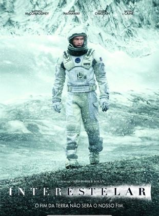

Lista de recomendação

Gênero:Ficção científica, Aventura, Fantasia Disponível em: Disney+. |
Notas de outros sitesIMDB:8,6, Rotten Tomateos: critíca:93% Público:96% J&J:8,8 |
Sinopse"Star Wars Episódio IV:Uma Nova Esperança "As Forças Imperiais - sob as ordens do cruel Darth Vader (David Prowse) - mantêm a Princesa Leia (Carrie Fisher) como refém, em seus esforços para reprimir a rebelião contra o Império Galáctico. Luke Skywalker (Mark Hamill) e Han Solo (Harrison Ford), capitão da Millennium Falcon, trabalham juntos com a dupla de dróides R2-D2 (Kenny Baker) e C-3PO (Anthony Daniels) para resgatar a linda princesa, ajudar o Aliança Rebelde e restaurar a liberdade e a justiça na Galáxia. |
|
Review pessoalEmbora tenha um tom de aventura leve e divertido, o filme também lida com temas de esperança, sacrifício e a luta do bem contra o mal, temas que tocam o público de todas as idades. |

Gênero: Ficção científica, Aventura Disponível em: Disney+. |
Notas de outros sitesIMDB:6,6 Rotten Tomateos: critíca:65% Público:56% J&J:7,4 |
Sinopse"Ataque dos Clones" Ambientado dez anos após os eventos de “A Ameaça Fantasma”, a República continua atolada em conflitos e caos. Um movimento separatista que abrange centenas de planetas e poderosas alianças corporativas representa novas ameaças à galáxia que nem mesmo os Jedi conseguem conter. Esses movimentos, há muito planejados por uma força poderosa e ainda não revelada, levam ao início das Guerras Clônicas e ao início do fim da República. |
|
Review pessoal"Ataque dos Clones" aprofunda-se na intriga política que levará à criação do Império Galáctico, mostrando a manipulação de Palpatine enquanto ele planeja consolidar poder absoluto. A formação do exército de clones e o início das Guerras Clônicas são momentos fundamentais para a saga. Nesse sentido, o filme é eficaz em expandir a galáxia e conectar os eventos às guerras futuras que moldarão o destino dos personagens. |
|

Gênero: Ficção científica, Drama, Aventura Disponível em: HBO Max e Amazon Prime Video. |
Notas de outros sitesIMDB:8,7 Rotten Tomateos: critíca:73% Público:86% J&J:9,3 |
SinopseNo futuro da Terra, uma praga global nas colheitas e um segundo Dust Bowl estão lentamente a tornar o planeta inabitável. O professor Brand (Michael Caine), um brilhante físico da NASA, está trabalhando em planos para salvar a humanidade transportando a população da Terra para um novo lar através de um buraco de minhoca. Mas primeiro, Brand deve enviar o ex-piloto da NASA Cooper (Matthew McConaughey) e uma equipe de pesquisadores através do buraco de minhoca e através da galáxia para descobrir qual dos três planetas poderia ser o novo lar da humanidade. |
|
Review pessoal"Interestelar" é conhecido por seu compromisso com a ciência real, especialmente em relação à relatividade e buracos negros. Nolan trabalhou com o físico teórico Kip Thorne para garantir que os conceitos de viagens interestelares, buracos de minhoca e dilatação temporal fossem representados de forma precisa, dentro dos limites do que é possível teoricamente. A representação visual do buraco negro Gargantua, por exemplo, é impressionante e baseada em cálculos científicos reais... |

Gênero: Ficção científica, Ação, Suspense Disponível em:HBO Max. |
Notas de outros sitesIMDB:8,7 Rotten Tomateos: critíca:83% Público:85% J&J:9,7 |
SinopseNeo (Keanu Reeves) acredita que Morpheus (Laurence Fishburne), uma figura esquiva considerada o homem mais perigoso do mundo, pode responder à sua pergunta – O que é a Matrix? Neo é contatado por Trinity (Carrie-Anne Moss), uma bela estranha que o leva a um submundo onde conhece Morpheus. Eles travam uma batalha brutal por suas vidas contra um grupo de agentes secretos extremamente inteligentes. É uma verdade que pode custar a Neo algo mais precioso que sua vida. |
|
Review pessoalNo coração de Matrix está a ideia de que o mundo que percebemos como real é, na verdade, uma simulação criada por máquinas para manter a humanidade sob controle. Essa premissa evoca perguntas filosóficas profundas sobre a natureza da realidade, a consciência e o livre-arbítrio, inspiradas por obras de filósofos como Platão, com o Mito da Caverna, e Descartes, com seu questionamento da percepção sensorial. A questão de "o que é real?" desafia o público a refletir sobre a própria percepção e existência, trazendo um nível de profundidade intelectual raramente visto em filmes de ação.O conceito da Matrix como uma simulação também reflete preocupações modernas com o avanço da tecnologia, inteligência artificial e realidade virtual. O filme foi visionário em antecipar discussões sobre o impacto da tecnologia na percepção da realidade e na liberdade humana. |

Gênero: Ficção científica, Aventura, Comédia Disponível em:Amazon Prime Video. |
Notas de outros sitesIMDB:8,5 Rotten Tomateos: critíca:93% Público:95% J&J:10 |
SinopseNeste clássico de ficção científica dos anos 80, o adolescente de uma pequena cidade da Califórnia, Marty McFly (Michael J. Fox), é jogado de volta aos anos 50 quando um experimento de seu excêntrico amigo cientista Doc Brown (Christopher Lloyd) dá errado. Viajando no tempo em um carro DeLorean modificado, Marty encontra versões jovens de seus pais (Crispin Glover, Lea Thompson) e deve garantir que eles se apaixonem ou ele deixará de existir. Ainda mais assustador, Marty tem que retornar ao seu tempo e salvar a vida de Doc Brown. |
|
Review pessoal"De Volta para o Futuro" é uma mistura perfeita de humor, aventura e ficção científica. Com um roteiro brilhante e atuações inesquecíveis de Michael J. Fox e Christopher Lloyd, o filme é envolvente e cativante do início ao fim. Um clássico indispensável! Esse filme para nós é o melhor filme, além disso ele é top. Não tenho palavras para descrever este filme. ASSISTA O MELHOR FILME DE FICÇÃO |